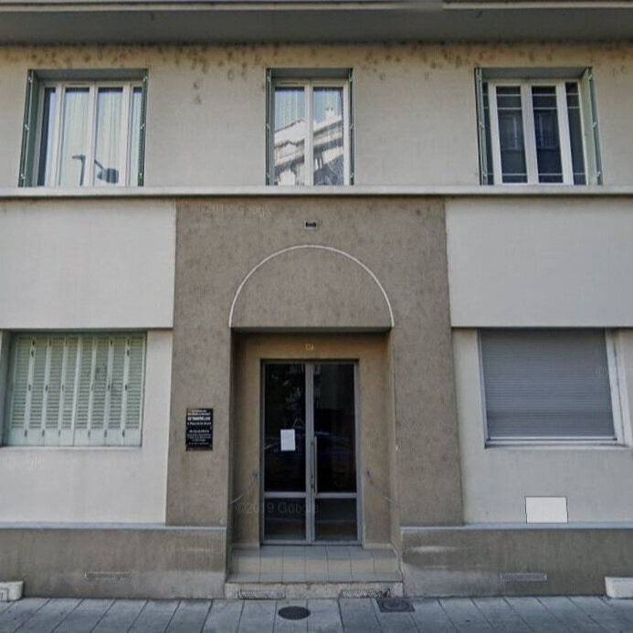

Portrait d’archive
Henri Kaminka
Henri KAMINKA
Henri KAMINKA est né le 21/10/1942 à Grenoble en France.
Rassemblé à Lyon, il est déporté à Auschwitz le 23/06/1943 par le convoi n°55. Il est mort en déportation le 28/06/1943. Il avait 1 ans.
Déporté avec Salomée (02/04/1913, Bialystock) sa mère médecin et Vital (11/01/1910, Brest-Purburg) son père. Déclaré officiellement "mort en déportation" au JO n°245 du 21/10/1994.
Dernière adresse connue : 47, rue Lachman (Grenoble)
Nom : KAMINKA
Prénom(s) : Henri, Georges, Léon, Julien
Date naissance : 21/10/1942
Âge (ans) : 8 mois
Lieu naissance : Grenoble
Pays ou département : Isère
Lieu rassemblement : Lyon
Dernière adresse : 47, rue Lachmann
Ville : Grenoble
Code postal : 38000
N° Convoi : 55
Date déportation : 23/06/1943
Informations diverses : Arrêtés le 02/06/1943 dans le train entre Vienne et Lyon par la Feldgendarmerie lors d’un contrôle de papier. Déporté à Auschwitz par le convoi 55 avec sa mère Salomée Kaminka née Zyman (02/04/1913, Bialystock) et son père Vital Kaminka (11/01/1910, Brest-Purburg), ingénieur Ponts et Chaussées. Séparés à l’arrivée à Auschwitz, Henri et sa mère sont immédiatement tués. Seul son père à survécu.
Kaminka (Henri, Georges, Léon, Julien), né le 21 octobre 1942 à Grenoble (Isère), décédé le 28 juin 1943 à Auschwitz (Pologne) (JO n°245 du 21/10/1994). JO
Kaminka, née Zyman (Saloméa) le 2 avril 1913 à Bialystok (Pologne) décédée le 28 juin 1943 à Auschwitz (Pologne). JO
Lieu de déportation : Auschwitz
Lieu de départ : Drancy
Nombre total de déporté·e·s du convoi : 1018
Gazé·e·s à l'arrivée : 518 (50,9 %)
Survivant·e·s en 1945 : 86 (8,4 %)